Back
Oakland Protest
My inspiration for creating this work came after various nights of observing the protest for myself and covering the protests for the San Francisco Chronicle.
12 photographs
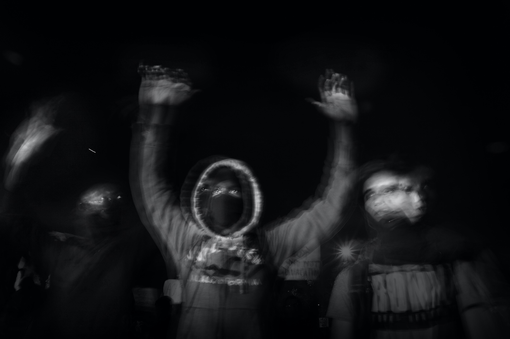
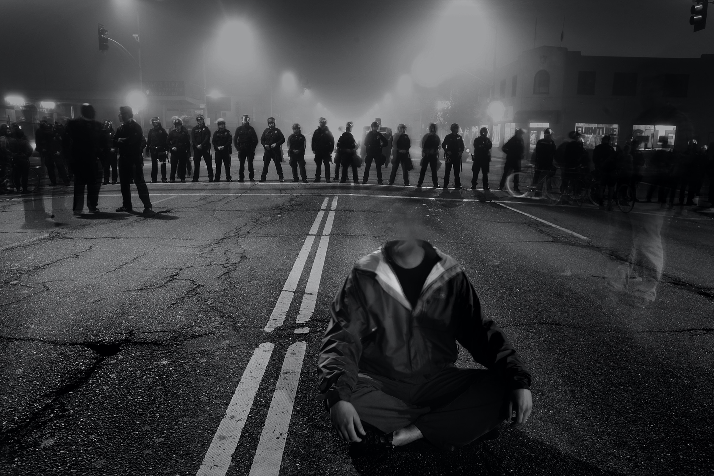
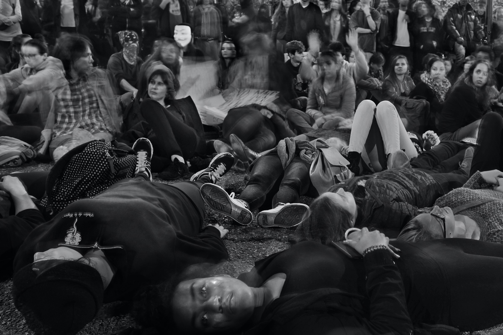
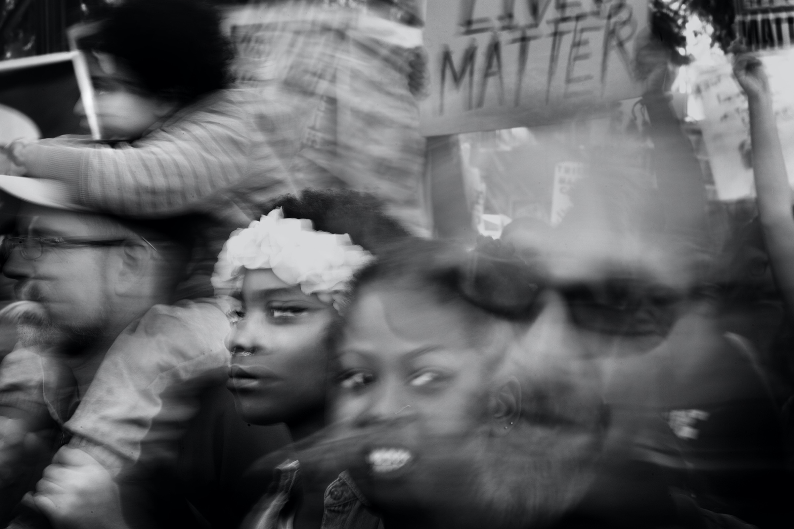
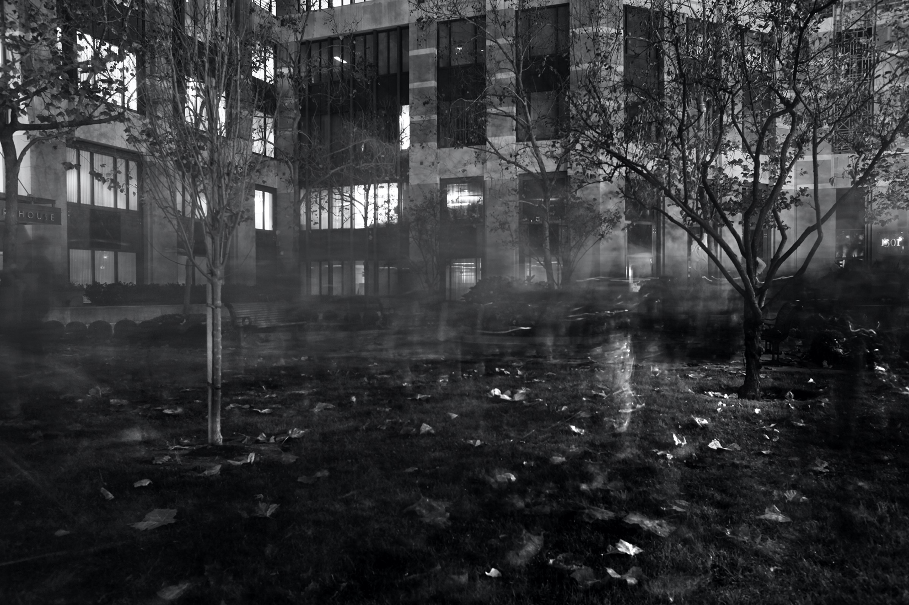
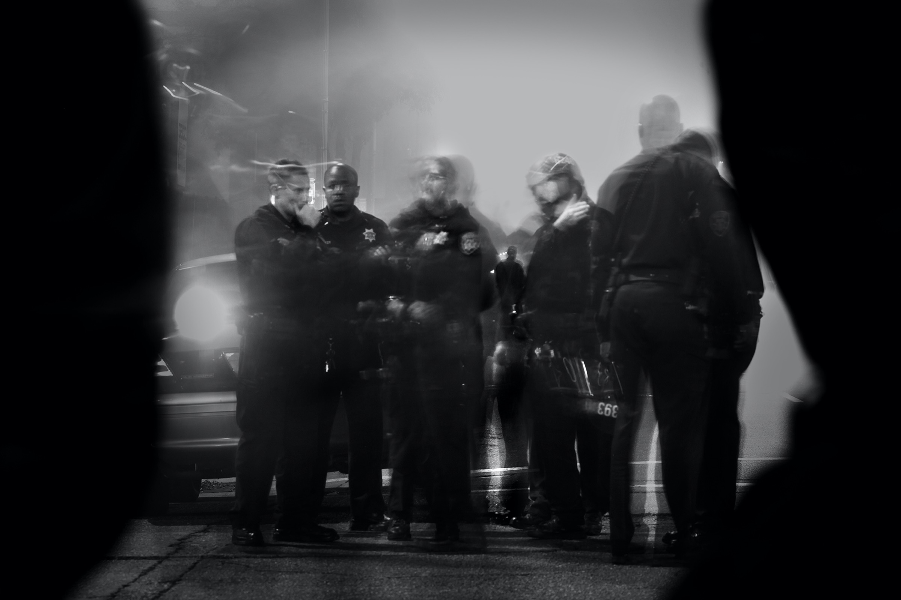
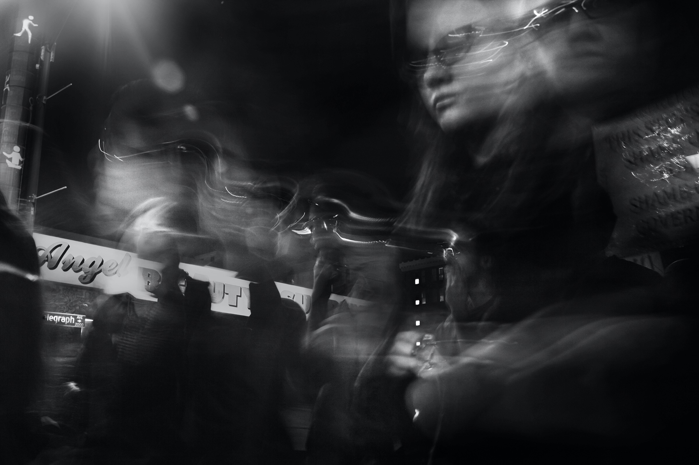
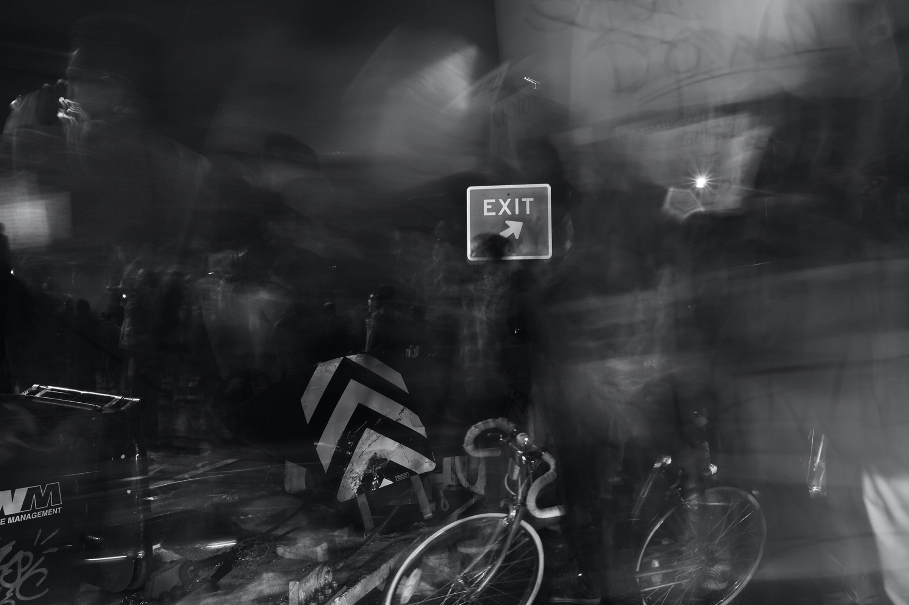
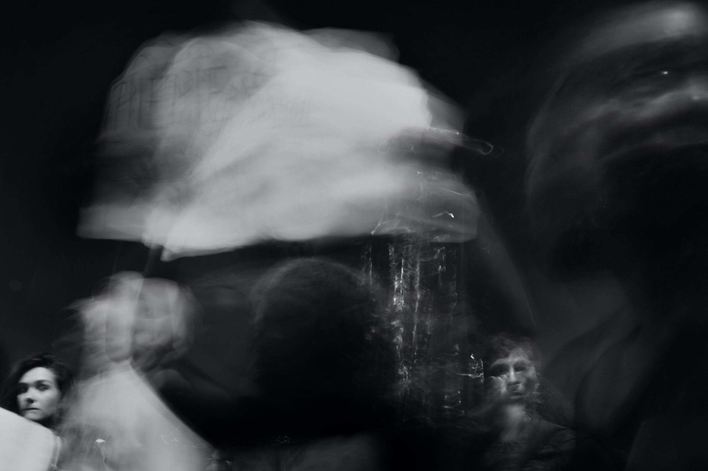
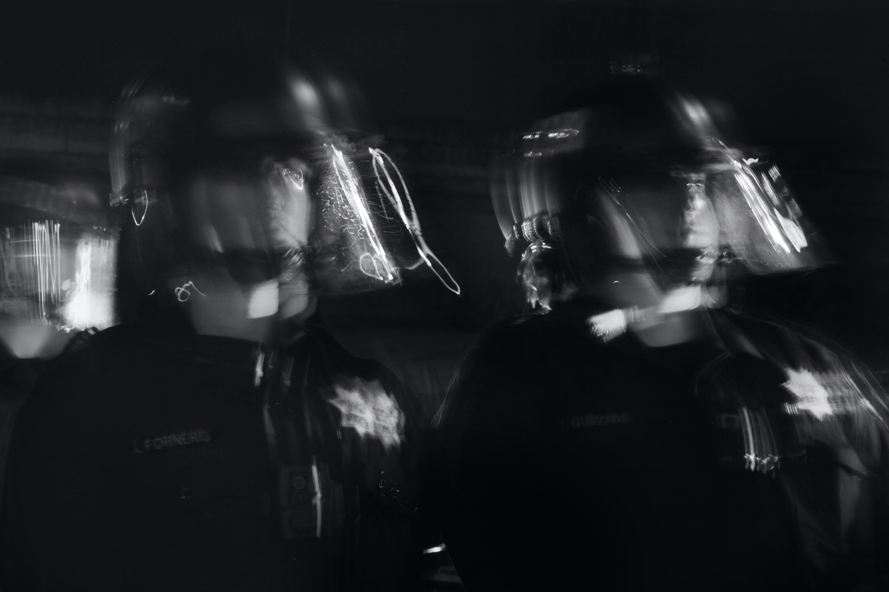
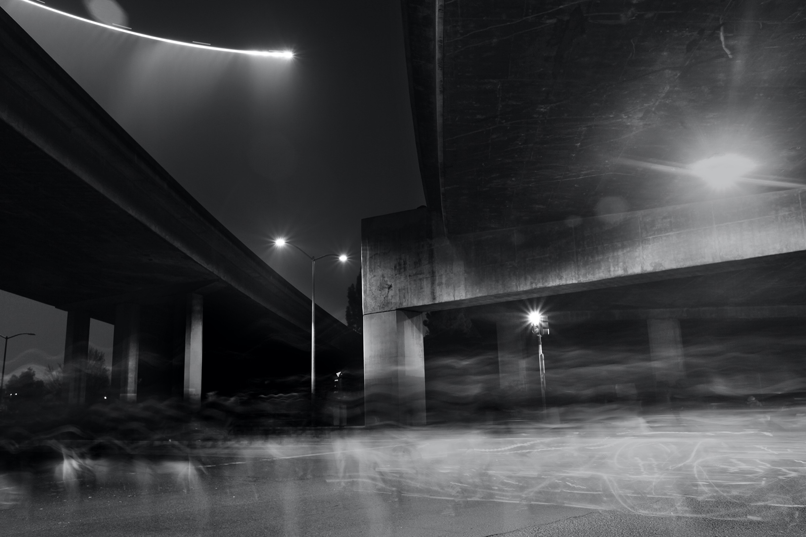
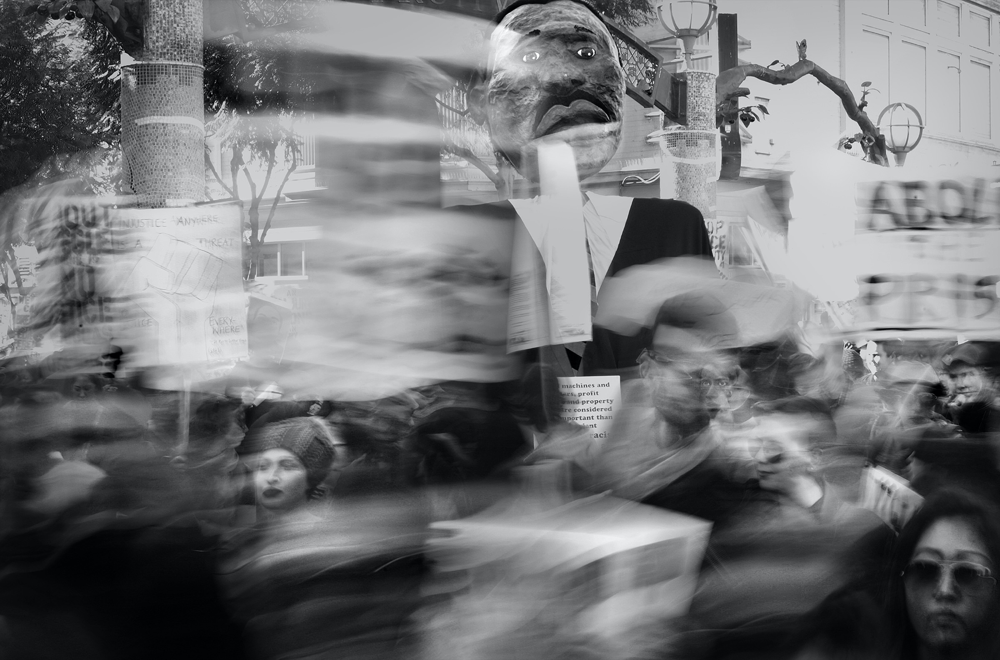